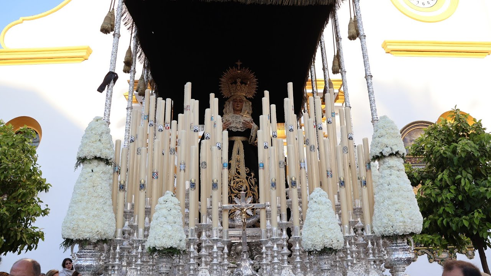

Santo Entierro
Parroquia Santa María Magdalena
Antigua y Fervorosa Hermandad y Cofradía Del Triunfo de La Santa Cru sobre la Muerte, Santo Entierro y Resurreción de Nuestro Señor Jesucristo y Nuestra Señora de La Soledad.

Numero de hermanos
650
Nazarenos
180
Autores
La Imagen de Cristo Yacente es obra de Juan Manuel Miñarro (1995). Nuestra Señora de la Soledad es obra de autor anónimo (siglo XVII).
Capataces
Antonio Santiago Muñoz y Auxiliares
Música
De Capilla en el Paso del Señor y Banda del Maestro Tejera en el Paso de Palio.
RECORRIDO
| Hora Aprox. | Cruz de guía |
|---|---|
| 18:30 | Salida/Carrera Oficial |
| 19:00 | Canónigo |
| 19:30 | La Mina |
| 20:00 | Calderón de la Barca |
| 20:30 | Santa Cruz |
| 21:00 | Rivas |
| 21:30 | Botica |
| 22:00 | Canónigo |
| 22:30 | Entrada |